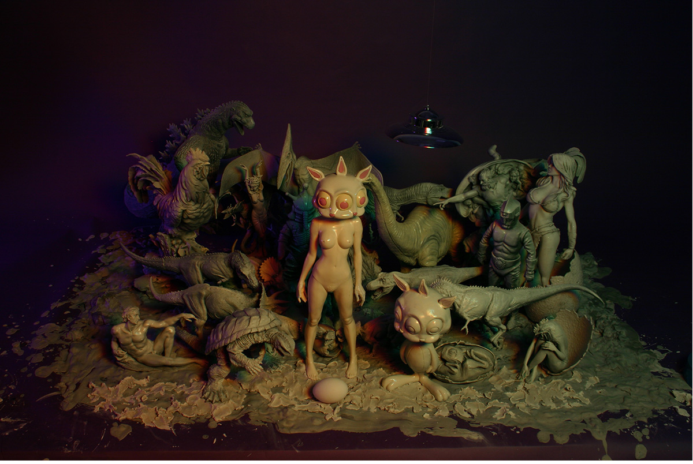
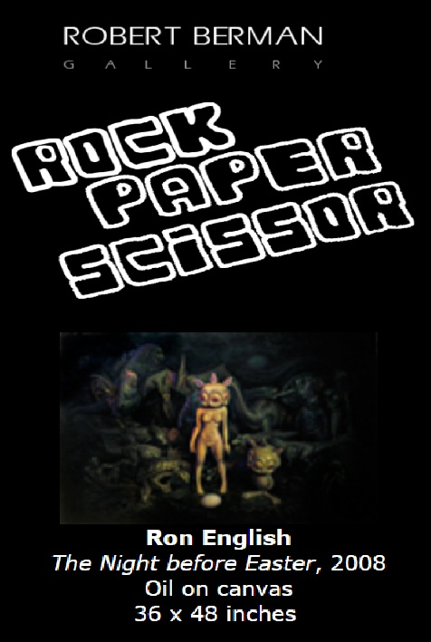
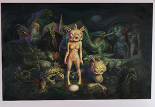

Exhibitions
Dark Pop, Last Rites Gallery, New York, New York, US, September 6–October 11, 2008.
Rock, Paper, Scissor, Robert Berman Gallery, Santa Monica, California, US, February 28–March 21, 2009. Curated by Jon Cournoyer.
Literature
Ron English, Status Factory: The Art of Ron English (San Francisco: Last Gasp of San Francisco, 2014), p. 103. ISBN 978-0867197891.
Ron English, Original Grin: The Art of Ron English (Paris: Cernunnos, 2019), p. 349. ISBN 978-2374950938.
Notes
This work references Michelangelo’s The Creation of Adam.
This composition was later adapted by the artist as a related giclée print published by Popaganda.
Ancillary Documentation




